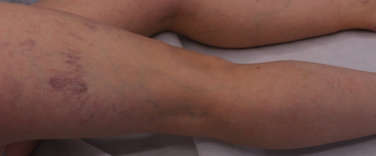
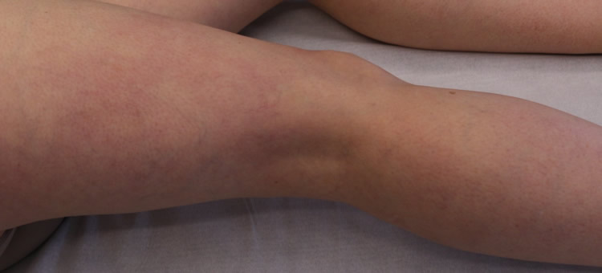
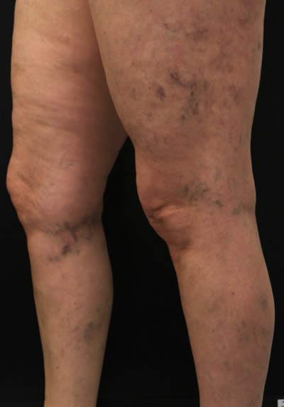
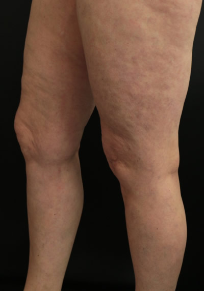
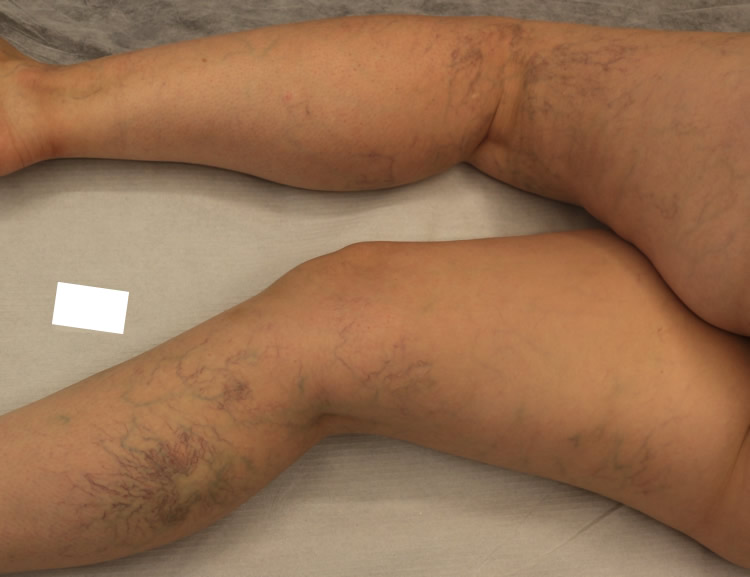
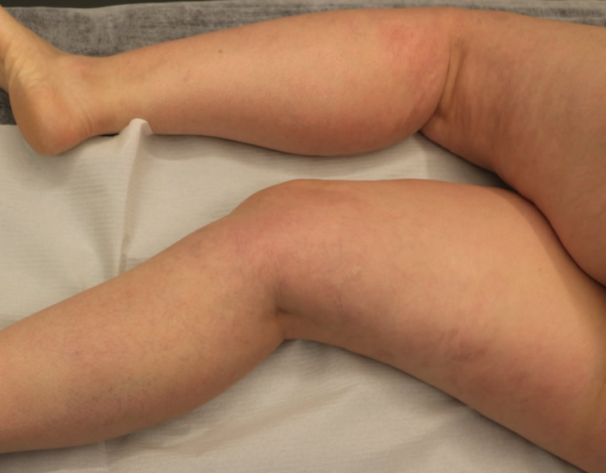

Importancia del diagnóstico en el correcto tratamiento de las arañas vasculares
¿Qué son las arañas vasculares?
Dentro de las afectaciones del sistema venoso superficial en extremidades inferiores (aquél que se distribuye por encima de los músculos), destacan las que involucran a los vasos más externos y de pequeño diámetro (inferiores a 1 – 2 mm) que llegan a la piel. Con múltiples denominaciones (telangiectasias, ramas reticulares, arañas vasculares, varículas), se trata de venas dilatadas y observables a simple vista, localizadas en la epidermis de cualquier área del cuerpo y en las mucosas (como la superficie del ojo).
La prevalencia es mayor (aunque en absoluto exclusiva) en mujeres y en su etiopatogenia parece intervenir un mal conocido mecanismo hormonal (que las hace más frecuentes en la menarquia, embarazo y menopausia), la toma de algunos medicamentos (anticonceptivos, terapia hormonal sustitutiva), traumatismos o, simplemente, la predisposición individual. También pueden estar producidas por varices subyacentes, en muchas ocasiones no observables a simple vista, que actúan como verdaderos vasos nutricios.
Todo esto supone que no se puedan evitar ni llevando medias de compresión, ni practicando ejercicio de forma habitual, ni con la ingesta de fármacos (como venotónicos o similares).
La importancia del diagnóstico
Diagnosticarlas correctamente y diferenciar su origen es fundamental, como se ilustra con el siguiente ejemplo: en cualquier hogar es habitual que aparezcan, sobre todo si se tienen niños, marcas en las paredes por rayones, rozaduras o manos más o menos pringosas. Éstas, con un poco de paciencia se pueden llegar a eliminar, o al menos disimular, a base de “borradores mágicos” o con retoques de pintura. Cosa diferente son las manchas de humedad debidas a la rotura de una tubería. Por más que se pinte, éstas no desaparecerán. De hecho, y en caso de no subsanar el defecto, la zona irá aumentando y con el tiempo llegará a horadar el yeso.
Pues bien, salvando las distancias, encontramos arañas vasculares circunscritas a la superficie, que serían como las primeras manchas descritas y otras, provocadas por varices, análogas a las humedades originadas por una tubería, necesitando obligatoriamente del estudio diagnóstico previo con Eco Doppler Color para diferenciarlas.
La importancia del (correcto) tratamiento
Una vez establecido el tipo de afectación, se puede pasar a planear el enfoque terapéutico adecuado.
Así, en caso de evidenciarse varices propiamente dichas, éstas lógicamente deberán ser tratadas primero (siguiendo con el ejemplo, hay que eliminar la fuga de la tubería antes de, tras dejarla secar, pintar la pared). A tal fin, el paciente avezado indagará entre diversas propuestas, desde la cirugía tradicional a las técnicas endoluminales (o la mezcla de ambas) y, para no equivocarse en la elección, las valorará concienzudamente, sopesando la relación “coste – beneficio” de cada una y su efectividad real ya que, sólo si las varices “internas” son correcta y completamente erradicadas, la terapia sobre las venitas “más superficiales” tendrá éxito.
Una vez alcanzada dicha meta, o si se hubiera descartado la existencia de varices mediante el Eco Doppler Color, al paciente se le planteará nuevamente la disyuntiva de buscar en el mercado el mejor método (seguro y eficaz) para tratar las telangiectasias. Los más extendidos son el láser y la escleroterapia (inyección en el vaso de una sustancia para inducir su fibrosis y posterior desaparición), que en todo caso deberán ser aplicados por personal médico en establecimientos sanitarios debidamente acreditados y nunca en centros de estética.
El láser cutáneo vascular busca agredir las venitas dilatadas con una fuente de calor para que posteriormente cicatricen. Para ello, su diámetro y color son factores esenciales, obteniéndose mejores resultados cuanto más minúsculas y rojas y peores cuanto más gruesas y azules, de forma que será inútil (o podrá provocar quemaduras) en venas reticulares y telangiectasias muy evolucionadas o sobre varices, por pequeñas y superficiales que sean. También cabe considerar que aunque tamaño y color sean adecuados, es una técnica descrita como dolorosa, por lo que de haber muchas varículas y/o muy dispersas se requerirá de sesiones largas y profusas, y por tanto poco tolerables.
En cuanto a la escleroterapia, hay diferencias según las características del medicamento a inyectar. De esta forma, los esclerosantes líquidos son sólo útiles sobre venitas de muy pequeño diámetro, ya que en las de mayor tamaño el principio activo se diluye e inactiva con la sangre. De hecho, el empleo de altas concentraciones de estos para salvar tal obstáculo supone un mayor riesgo de efectos adversos, que van desde el dolor en la inyección, la sobredosificación de la zona tratada (con hiperpigmentaciones), el matting (efecto rebote) o la quemadura química.
Otros, con ese mismo líquido y métodos mecánicos, como el de Tessari, elaboran “espumas caseras” (“homemade foams”), intentando aumentar su eficacia. Sin embargo, al emplear normalmente en su formulación aire ambiental, contienen un alto contenido de Nitrógeno que, una vez se inyecta, es perjudicial (riesgo de embolia gaseosa). Por eso, el volumen a administrar forzosamente ha de ser bajo y el área de piel tratada reducido. Esto, junto a su inestabilidad y falta de homogeneidad, redunda en una merma importante en los resultados.
Nuestro tratamiento
En Clínicas Dr. Juan Cabrera salvamos todos estos problemas con una única técnica y gracias al empleo de la Microespuma℗ esclerosante porque:
- En todos los casos realizamos una primera visita diagnóstica con Eco Doppler Color para confirmar o descartar la existencia de varices que nutran a las telangiectasias.
- De existir varices, e independientemente de su origen, tamaño y distribución, las erradicamos completamente mediante nuestra exclusiva técnica ecoguiada para la administración de la Microespuma℗, que es totalmente ambulatoria y no quirúrgica (sin cortes ni incisiones, sin anestesia, sin postoperatorio y sin necesidad de baja médica).
- Conforme se eliminan las varices (y en los casos donde no existen), las arañas vasculares se tratan con Microespuma℗ de concentración de esclerosante adecuada, que permite con seguridad y eficacia alcanzar en una sola sesión (normalmente) la superficie completa de ambos muslos y piernas.
- Recalcar que la Microespuma℗ ha sido aprobada por la Agencia Norteamericana del Medicamento (FDA) y la Agencia Europea del Medicamento (EMA), se formula con gases fisiológicos y está libre de Nitrógeno, por lo que se evitan sus indeseables efectos secundarios, tal como quedó acreditado en los ensayos clínicos ante estos entes reguladores.
Casos reales
A continuación mostramos ejemplos de los tipos de cuadros antes descritos. Empezamos por una paciente en la que se descartó con el Eco Doppler Color la existencia de varices “bajo” las varículas y ramas reticulares, de forma que se procedió al tratamiento de éstas mediante sesiones. Bastaron 2 para conseguir los siguientes resultados:


En los dos siguientes sí se hallaron varices internas. En la primera, éstas eran especialmente abigarradas porque previamente se habían intervenido quirúrgicamente sin éxito, siendo tratadas por nosotros junto a las telangiectasias:


En la segunda se encontró una afectación bilateral de ambas Safenas Internas (o Mayores) y Externas (o Menores), la cuales fueron eliminadas:


Dr. Gonzalo López
Especialista en flebología. Doctor en Ingeniería Tisular, especialidad en BiomaterialesClínica Dr. Juan Cabrera (A Coruña)
Productos Y Servicios
Si quieres conocer nuestra gama de productos más detalladamente y de manera cómoda aquí puedes ver todos nuestros productos
ver másContacta
¿Alguna duda acerca de nuestros productos o servicios? Aquí tienes todas las formas de contactar con nosotros
ver masTe Llamamos Gratis
Si tienes alguna pregunta sobre nuestros productos o servicios o necesitas consejos sobre algo relacionado con nuestro negocio, por favor déjanos un teléfono fijo o número de teléfono móvil y te llamamos gratis.
ver mas